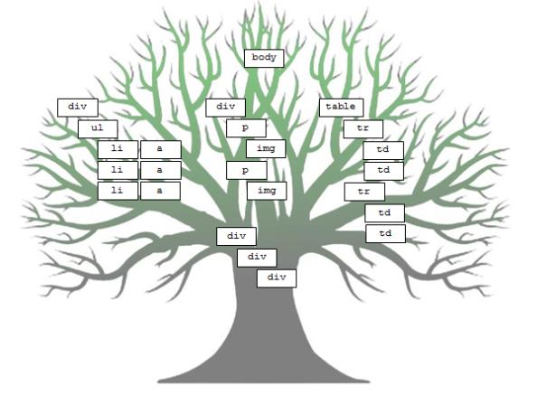

JavaScript
Timeouts. DOM. XHR
Съдържание
Timeouts
DOM
XHR
Timeouts
setTimeout и clearTimeout
- Изпълнява дадена функция след определено време
- Времето за изпълнение на функцията не е гарантирано, а минимално
setTimeout
function test() {
console.log("Hello");
}
setTimeout(test, 1000);
console.log("World");
function test() {
console.log("Hello");
setTimeout(test, 1000);
}
setTimeout(test, 1000);
clearTimeout
function test() {
console.log("Hello");
}
var timerId = setTimeout(test, 1000);
clearTimeout(timerId);
console.log("World");
setInterval и clearInterval
- Повтаря изпълнението на дадена функция на определен интервал от време
setInterval
function test() {
console.log("Hello");
}
setInterval(test, 1000);
clearInterval
function test() {
console.log("Hello");
}
var timerId = setInterval(test, 1000);
clearInterval(timerId);
setInterval vs setTimeout
Полезни връзки
QUIZ
DOM манипулации
Какво е DOM?
Document Object Model
Структурира се като дърво, което представя какво има на HTML/XML/SVG документ
HTML елемент
- div, p, a, head, button, други?
- Тяхното поведение се дефинира чрез JavaScript
Достъпване на DOM API през JavaScript
Селектори
- document.getElementById()
- document.getElementsByTagName()
- document.getElementsByClassName()
- document.querySelector()
- document.querySelectorAll()
Пример
- 1.1
- 1.2
- 2.1
- 2.2
document.getElementById("my-div"); // връща първия див
document.getElementsByClassName("second-li"); // предположете? :)"
document.getElementsByTagName("li") // всички li
document.querySelector("li") // първото li в DOM

Създаване и добавяне на DOM елементи в страница

Създаване на DOM елементи
- document.createElement(tagName)
var myDiv = document.createElement("div"); console.log(myDiv);
Добавяне на DOM в страница
- element.appendChild()
- element.removeChild()
var myDiv = document.createElement("div");
document.body.appendChild(myDiv);
Манипулиране на HTML елементи
- element.style.propety()
- element.hasAttribute()
- element.toString()
- element.innerHTML
- element.textContent
- element.children
- И още много други..
Добавяне на събития
- click
- addEventListener
- Информация за възможните събития
- scrollTop
- и други
Пример
var myButton = document.createElement("Button");
myButton.addEventListener("click", function() {
alert("Hi there!");
});
XMLHttpRequest
Какво е XHR
- Служи за комуникация между клиент и сървър
- Няма нужда от пълно презареждане на страницата
- Работи и с други неща освен с XML
- Използва се в AJAX програмирането
- Прави нещата "асинхронни"
XHR синтаксис
var myRequest = new XMLHttpRequest(); //прави обект от такъв тип
Основни методи и свойства на XHR
var thank = "you!";
var tutors = [{
name: "Мартин Христов",
email: "martin.r.hristov@sap.com"
}, {
name: "Адриан Бобев",
email: "adrian.bobev@sap.com"
}];